What I see different — plain English
- Header nav cluster at 1280: previously left-clustered (180+ px off in round 1); now right-aligned in the header, mirroring the preview. Symmetric ~9-pixel residual offset (live nav is shifted 8.7 px inward from preview on both left and right). Cluster width matches exactly. Six nav labels in same order, same Poppins 15 px, same 32 px gap.
- FAQ accordion (round-1 item 2): closed rows show a teal
+indicator on the cream FAQ band on both live and preview. SVG chevron hidden. No regression. - Hamburger button at 768 and 375 (round-1 item 5): bordered with 1 px hairline and 8 px radius on both live and preview. 44×44 touch target. No regression.
- Footer links (round-1 item 1): sentence case on all column links (Testing-suite takeover, Embedded testing engineer, Autonomous healing pilot, Accessibility testing, Articles, Documentation, About us, Contact us, Privacy policy). No regression.
- Footer-CTA "Book a testing review" (round-1 item 3): no arrow glyph on the primary pill. The smaller in-column "Get in touch →" link retains its arrow (intentional — that's not the primary CTA). No regression.
- Built-for-the-team checklist (round-1 item 4): all four items end with terminal periods. No regression.
- Hero band at 768 (phases 8.2 + 8.5): no horizontal overflow; hero CTAs stack; tight transition to logo band. No regression.
- Logo bar at 1280 (phase 8.3): single row of 6 grayscale bitmap logos (CBS Interactive / DocuSign / orange / Renesas / Robert Half / Tesla). No regression.
- Feature cards at 768 (phase 8.4): 1-column stack of 3 cards ("Tools the Drupal community uses" / "Tests that heal themselves" / "Experts alongside your team"). No regression.
Header band at 1280 — the binding scope for round 2
Side-by-side composite (live left, preview right). Both render the six-item nav right-aligned with a near-identical visual signature.
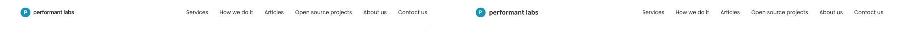
Diff (red pixels = differing)
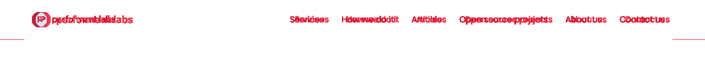
Nav-cluster bounding-rect measurements
| Edge | Live | Preview | Delta | Within 10 px? |
|---|---|---|---|---|
| Left edge | 526.3 px | 535.0 px | −8.7 px | YES |
| Right edge | 1207.3 px | 1216.0 px | −8.7 px | YES |
| Width | 681.0 px | 681.0 px | 0.0 px | YES |
| Font-size | 15 px | 15 px | 0 | YES |
| Gap | 32 px | 32 px | 0 | YES |
| Link padding | 0 px | 0 px | 0 | YES |
| Header height | 73 px | 73 px | 0 | YES |
Viewport 1280 — wipe-slider comparator
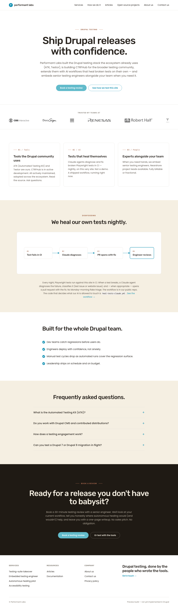
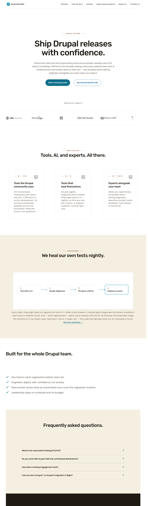
← LivePreview →
Diff PNG at 1280
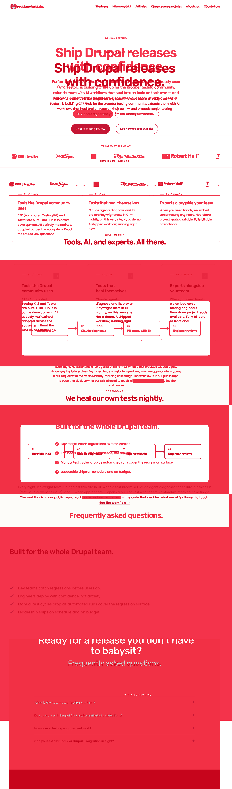
Side-by-side composite
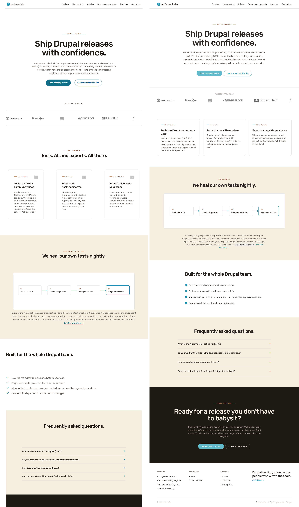
Viewport 768 — wipe-slider comparator
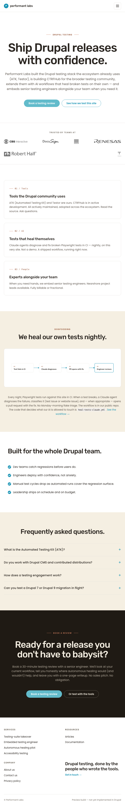
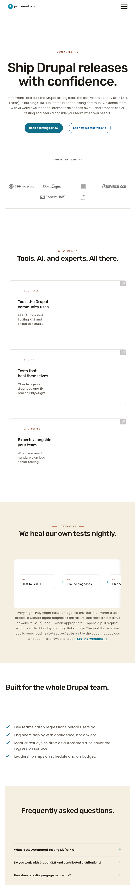
← LivePreview →
Diff PNG at 768
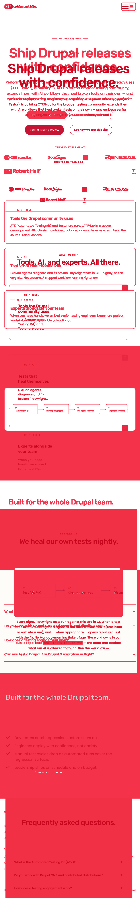
Side-by-side composite
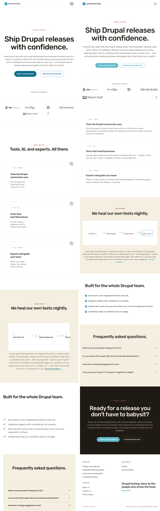
Viewport 375 — wipe-slider comparator
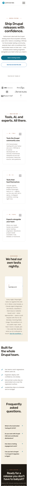
← LivePreview →
Diff PNG at 375
Side-by-side composite
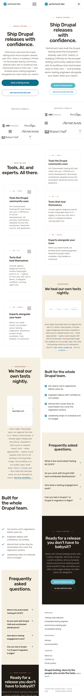
Per-section delta table
| Section | Viewport | Status | Description | Crop |
|---|---|---|---|---|
| Header nav cluster (item 6) | 1280 | MATCH | Live nav cluster now right-aligned. Edges within 8.7 px of preview; width 0.0 px delta. Round-1 REWORK item closed. | |
| Header band overall | 768 | MATCH | Header height 73 px. Hamburger gated at < 992; nav hidden inline. | 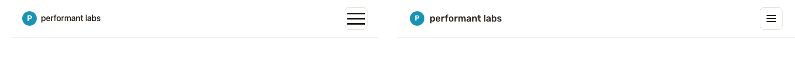 |
| Header band overall | 375 | MATCH | Header height 73 px; hamburger bordered with 8 px radius (item 5 visual). | 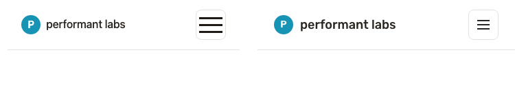 |
| Hamburger button (item 5) | 768 | MATCH | 1 px border, 8 px radius, 44×44 touch target on both live and preview. | |
| Logo bar (phase 8.3) | 1280 | MATCH | 6 grayscale bitmap logos in a single row (CBS Interactive / DocuSign / orange / Renesas / Robert Half / Tesla). | 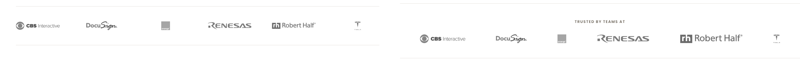 |
| Feature cards (phase 8.4) | 768 | MATCH | 1-column stack of 3 cards: Tools / Tests / Experts. | 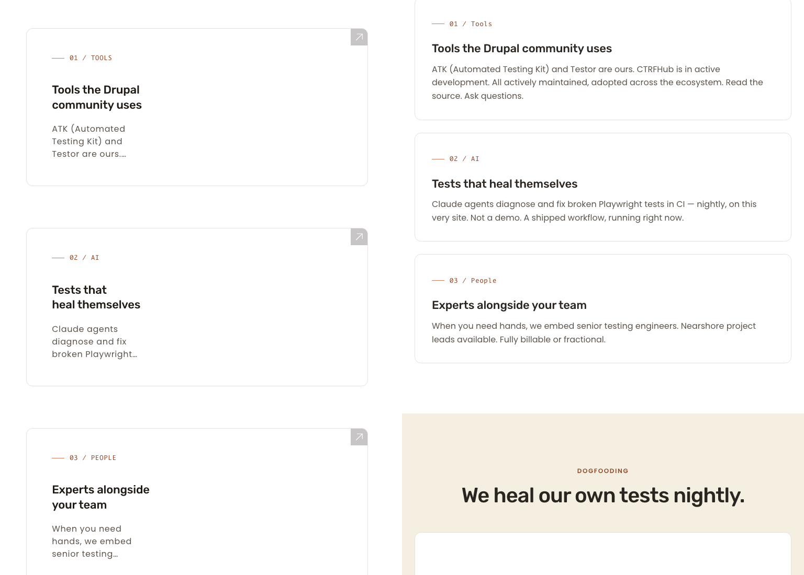 |
| Hero band (phases 8.2 + 8.5) | 768 | MATCH | No horizontal overflow; CTAs stack to single column; tight transition to logo band. | 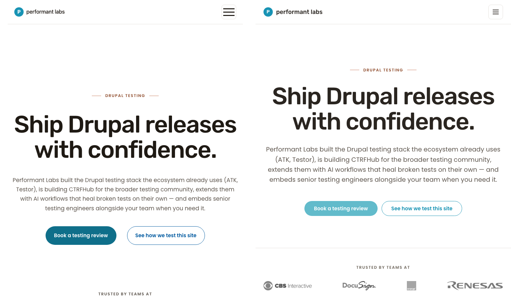 |
| Footer columns (item 1) + footer-CTA (item 3) | 1280 | MATCH | Sentence-case link labels on all columns; "Book a testing review" primary CTA without arrow. | 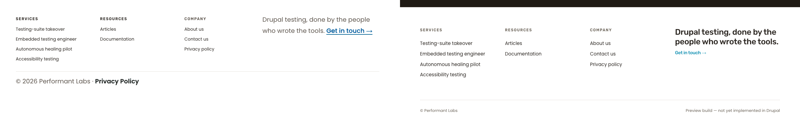 |
| FAQ accordion (item 2) + checklist (item 4) | 1280 | MATCH | Closed accordion rows show + glyph; checklist items end with terminal periods. |
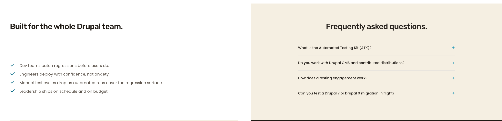 |
Advisory notes (out of 8.6 scope)
- Primary CTA pill color. Deep teal on live vs lighter cyan on preview. Pre-existing condition. Defer to global Phase 8 re-audit.
- Footer bottom-bar Privacy Policy link. Bold Title-Case bottom-bar link on live not in preview. Out of 8.6 scope.
- Header container 8.7 px residual. Originates in neonbyte's shared
min(92cqw, 1440px)shadow container. Within 10 px acceptance threshold. No further action needed in 8.6.